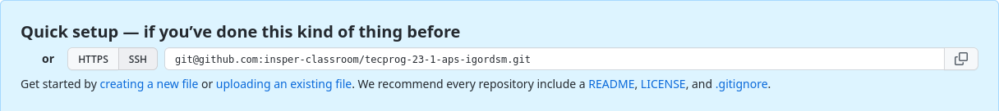

Entregas da disciplina
Todas as entregas da disciplina serão feita via um repositório Git para cada aluno. Acesse abaixo para aceitar o convite e iniciar seu trabalho.
Primeiro acesso
Todo o código de suporte da disciplina está público no repositório Tecnicas de Programação APS. Nesse guia iremos configurar seu repositório privado para acompanhar esse repo público.
Important
Você deve ter recebido um repo novo privado. Copie o endereço do seu repo abaixo. Ele será usado no restante do guia.

Para começar, crie uma pasta nova para seu repositório de entregas e inicialize um repo vazio:
Primeiro vamos adicionar o repositório remoto dos arquivos de suporte e baixar o branch main (que contém os arquivos deste semestre)
Agora vamos adicionar o repositório das suas entregas e já enviar o código de suporte:
Pronto! Com isso você já deve ter seu repositório local configurado e apontando para dois repositórios remotos:
- insper: este repo contém todo o código de suporte para as atividades. É compartilhado por toda a sala e ninguém tem permissão de dar push nele.
- entregas: este repo é só seu e contém seu trabalho apenas. Aqui irão somente as modificações feitas por você :)
Você pode checar se tudo deu certo rodando git branch -avv. Você deve ver algo parecido como o abaixo:
deck@ubuntu-dev:~/Documents/entregas-tecprog$ git branch -avv
* main 7329318 [entregas/main] Add readme.md
remotes/entregas/main 7329318 Add readme.md
remotes/insper/main 7329318 Add readme.md
Exercício 1
Recebendo atualizações e novas APS
Ao longo do semestre será liberado código das novas APS e possíveis atualizações nos testes. Siga este guia para atualizar seus arquivos de suporte.
Vamos iniciar baixando as novidades do repositório de suporte:
Vamos então incorporar as novidades no seu repositório local e enviar os novos arquivos pro seu repo privado.
Exercício 2